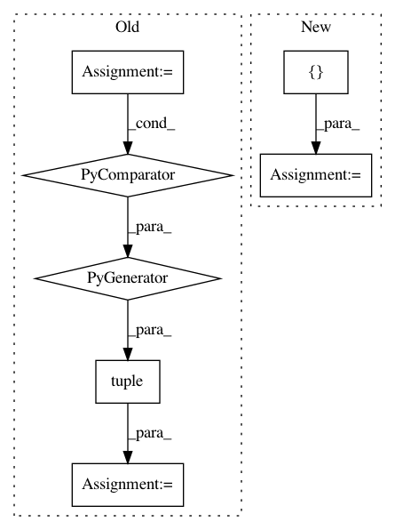

7391aec984c1e9e0899d51e6b0538483c37ec8fb,torchdiffeq/_impl/adjoint.py,,odeint_adjoint,#,115
Before Change
tensor_input = True
y0 = (y0,)
func = TupleFunc(func)
params = tuple(func.parameters())
if adjoint_buffers:
params = params + tuple(buffer for buffer in func.buffers() if buffer.requires_grad)
n_tensors = len(y0)
ys = OdeintAdjointMethod.apply(func, t, rtol, atol, method, options, adjoint_rtol, adjoint_atol, adjoint_method,
adjoint_options, n_tensors, *params, *y0)
if tensor_input:
ys = ys[0]
return ys
After Change
adjoint_method, adjoint_options, t.requires_grad, *adjoint_params)
if not tensor_input:
solution = _flat_to_shape(solution, tuple([len(t), *shape] for shape in shapes))
return solution
In pattern: SUPERPATTERN
Frequency: 4
Non-data size: 7
Instances
Project Name: rtqichen/torchdiffeq
Commit Name: 7391aec984c1e9e0899d51e6b0538483c37ec8fb
Time: 2020-07-27
Author: 33688385+patrick-kidger@users.noreply.github.com
File Name: torchdiffeq/_impl/adjoint.py
Class Name:
Method Name: odeint_adjoint
Project Name: keras-team/keras
Commit Name: bf464d7ed9283988fea1f548a11a0171fd2ff364
Time: 2021-01-06
Author: gardener@tensorflow.org
File Name: keras/utils/version_utils.py
Class Name:
Method Name: swap_class
Project Name: Scitator/catalyst
Commit Name: f4beaac559e00a3676d942dc7e8fea69efc01cfe
Time: 2020-11-30
Author: raveforlive@gmail.com
File Name: catalyst/metrics/avg_precision.py
Class Name:
Method Name: mean_avg_precision
Project Name: pantsbuild/pants
Commit Name: 0c34574cd5a9f3362930b28376c1f6481d2ec073
Time: 2020-08-13
Author: 14852634+Eric-Arellano@users.noreply.github.com
File Name: src/python/pants/backend/python/dependency_inference/rules.py
Class Name:
Method Name: infer_python_dependencies